Generate Diversity Profiles for Parametric Indices
Source:R/diversity.profile.R
diversity.profile.RdComputes diversity profiles across a continuous range of sensitivity
parameter (The order q) using parametric diversity indices such as
Hill numbers, Rényi entropy, and Tsallis entropy. The function also supports
the generation of multiple profiles to enable comparisons among groups. It
provides flexible options for generation of bootstrap confidence intervals
for the values.
Arguments
- x
A numeric or factor vector of observations.
- group
A factor vector indicating the group of each observation. Must have the same length as
x.- q
The order of the parametric index.
- na.omit
logical. If
TRUE, missing values (NA) are ignored and not included as a distinct factor level for computation. Default isTRUE.- ci.conf
Confidence level of the bootstrap interval. Default is 0.95.
- R
Integer specifying the number of permutations. Default is 1000.
- parameter
The parametric index. Options include
"hill","renyi"and"tsallis". Default is"hill".- ci.type
A vector of character strings representing the type of intervals required. The options are
c("perc", "bca").- parallel
The type of parallel operation to be used (if any). If missing, the default is taken from the option
"boot.parallel"(and if that is not set,"no").- ncpus
integer: number of processes to be used in parallel operation: typically one would chose this to the number of available CPUs.
- cl
An optional parallel or snow cluster for use if
parallel = "snow". If not supplied, a cluster on the local machine is created for the duration of thebootcall.- seed
Integer. Random seed used to ensure reproducibility of bootstrap. Default is 123.
Value
A list of data frames with the following columns for each factor
level in group.
- q
- observed
- mean
- lower
- upper
Details
See Parametric Indices in diversity.calc for
theoretical details.
Note
The default number of bootstrap replicates R = 1000 is
provided for quick exploratory analysis. For more reliable (but slower)
confidence intervals or standard error estimates it is strongly recommended
to increase R to at 5000-10000, depending on your data and required
precision.
Examples
library(EvaluateCore)
library(dplyr)
#>
#> Attaching package: ‘dplyr’
#> The following objects are masked from ‘package:stats’:
#>
#> filter, lag
#> The following objects are masked from ‘package:base’:
#>
#> intersect, setdiff, setequal, union
library(ggplot2)
pdata <- cassava_CC
qual <- c("CUAL", "LNGS", "PTLC", "DSTA", "LFRT", "LBTEF", "CBTR", "NMLB",
"ANGB", "CUAL9M", "LVC9M", "TNPR9M", "PL9M", "STRP", "STRC",
"PSTR")
# Convert qualitative data columns to factor
pdata[, qual] <- lapply(pdata[, qual], as.factor)
str(pdata)
#> 'data.frame': 168 obs. of 26 variables:
#> $ CUAL : Factor w/ 4 levels "Dark green","Green purple",..: 3 1 2 2 2 2 4 2 2 1 ...
#> $ LNGS : Factor w/ 3 levels "Long","Medium",..: 3 1 2 2 2 2 2 1 1 1 ...
#> $ PTLC : Factor w/ 5 levels "Dark green","Green purple",..: 3 4 4 4 4 5 4 2 2 5 ...
#> $ DSTA : Factor w/ 5 levels "Absent","Central part",..: 1 5 5 5 5 5 5 4 2 5 ...
#> $ LFRT : Factor w/ 4 levels "25-50% leaf retention",..: 1 1 1 1 3 2 2 2 2 2 ...
#> $ LBTEF : Factor w/ 6 levels "0","1","2","3",..: 3 1 2 1 4 5 4 4 3 2 ...
#> $ CBTR : Factor w/ 3 levels "Cream","White",..: 2 2 2 2 1 2 1 1 1 1 ...
#> $ NMLB : Factor w/ 9 levels "0","1","2","3",..: 3 1 2 1 4 4 4 3 3 4 ...
#> $ ANGB : Factor w/ 4 levels "150-300","450-600",..: 1 4 1 4 2 2 2 1 2 2 ...
#> $ CUAL9M: Factor w/ 5 levels "Dark green","Green",..: 1 1 3 5 3 3 5 5 5 4 ...
#> $ LVC9M : Factor w/ 5 levels "Dark green","Green",..: 4 3 3 3 3 1 3 1 4 3 ...
#> $ TNPR9M: Factor w/ 5 levels "1","2","3","4",..: 5 5 4 2 5 4 2 5 5 5 ...
#> $ PL9M : Factor w/ 2 levels "Long (25-30cm)",..: 2 2 1 1 1 1 1 1 2 2 ...
#> $ STRP : Factor w/ 4 levels "Absent","Intermediate",..: 2 3 1 1 1 1 4 1 1 4 ...
#> $ STRC : Factor w/ 2 levels "Absent","Present": 2 2 1 2 1 1 2 1 1 2 ...
#> $ PSTR : Factor w/ 2 levels "Irregular","Tending toward horizontal": 1 2 2 2 1 2 2 2 1 2 ...
#> $ NMSR : num 6 2 6 2 20 13 4 14 10 5 ...
#> $ TTRN : num 3 0.5 3 2 5 ...
#> $ TFWSR : num 1.4 2.6 1.2 1.6 5 7 4.2 2.8 2.8 4 ...
#> $ TTRW : num 0.7 0.65 0.6 1.6 1.25 ...
#> $ TFWSS : num 1 2.8 2.8 2.4 16 12 9 4.4 6.2 5 ...
#> $ TTSW : num 0.5 0.7 1.4 2.4 4 ...
#> $ TTPW : num 2.4 5.4 4 4 21 19 13.2 7.2 9 9 ...
#> $ AVPW : num 1.2 1.35 2 4 5.25 4.75 3.3 2.4 1.8 2.25 ...
#> $ ARSR : num 2 0 2 0 3 0 0 6 0 0 ...
#> $ SRDM : num 42 39.8 29.7 43 37.9 37 38.9 36.9 41 37.9 ...
important_q <- c(0, 1, 2)
important_labels <- c("0D", "1D", "2D")
# NOTE: Increase R to 10000 for more reliable (but slower) estimates.
# Hill profile - Percentile CIs ----
hill_profile1 <-
diversity.profile(x = pdata$CUAL, group = pdata$LNGS,
parameter = "hill", ci.type = "perc",
R = 100)
hill_profile1
#> $Long
#> q observed mean lower upper ci.type
#> 1 0.0 3.000000 3.000000 3.000000 3.000000 perc
#> 2 0.1 2.970041 2.965527 2.919290 2.994121 perc
#> 3 0.2 2.940750 2.932192 2.842233 2.988250 perc
#> 4 0.3 2.912153 2.900010 2.769187 2.982390 perc
#> 5 0.4 2.884272 2.868987 2.700099 2.976541 perc
#> 6 0.5 2.857124 2.839120 2.634955 2.970706 perc
#> 7 0.6 2.830721 2.810399 2.573706 2.964887 perc
#> 8 0.7 2.805073 2.782809 2.516270 2.959084 perc
#> 9 0.8 2.780186 2.756329 2.469493 2.953301 perc
#> 10 0.9 2.756060 2.730934 2.429612 2.947538 perc
#> 11 1.0 2.732695 2.706596 2.393756 2.941797 perc
#> 12 1.1 2.710085 2.683284 2.361469 2.936080 perc
#> 13 1.2 2.688224 2.660965 2.326622 2.930389 perc
#> 14 1.3 2.667101 2.639605 2.295192 2.924724 perc
#> 15 1.4 2.646704 2.619169 2.264013 2.919089 perc
#> 16 1.5 2.627019 2.599620 2.230264 2.913484 perc
#> 17 1.6 2.608031 2.580922 2.197525 2.907910 perc
#> 18 1.7 2.589722 2.563040 2.166801 2.902370 perc
#> 19 1.8 2.572075 2.545938 2.136294 2.896865 perc
#> 20 1.9 2.555070 2.529581 2.107384 2.891396 perc
#> 21 2.0 2.538688 2.513935 2.080265 2.885964 perc
#> 22 2.1 2.522908 2.498966 2.054843 2.880572 perc
#> 23 2.2 2.507711 2.484642 2.031026 2.875219 perc
#> 24 2.3 2.493075 2.470933 2.008719 2.869908 perc
#> 25 2.4 2.478981 2.457808 1.987832 2.864639 perc
#> 26 2.5 2.465409 2.445239 1.968274 2.859414 perc
#> 27 2.6 2.452337 2.433199 1.949959 2.854234 perc
#> 28 2.7 2.439748 2.421660 1.932804 2.849100 perc
#> 29 2.8 2.427621 2.410598 1.916731 2.844013 perc
#> 30 2.9 2.415938 2.399990 1.901666 2.838973 perc
#> 31 3.0 2.404680 2.389812 1.887538 2.833982 perc
#>
#> $Medium
#> q observed mean lower upper ci.type
#> 1 0.0 4.000000 3.540000 3.000000 4.000000 perc
#> 2 0.1 3.775167 3.412327 2.913982 3.869732 perc
#> 3 0.2 3.586424 3.299979 2.832172 3.749020 perc
#> 4 0.3 3.427791 3.200860 2.756875 3.638839 perc
#> 5 0.4 3.293906 3.113045 2.687079 3.537879 perc
#> 6 0.5 3.180150 3.034831 2.622537 3.450294 perc
#> 7 0.6 3.082659 2.964754 2.563273 3.373527 perc
#> 8 0.7 2.998274 2.901581 2.504153 3.304748 perc
#> 9 0.8 2.924454 2.844287 2.445643 3.242893 perc
#> 10 0.9 2.859178 2.792026 2.383772 3.186604 perc
#> 11 1.0 2.800853 2.847501 2.353253 3.189054 perc
#> 12 1.1 2.748230 2.699954 2.256499 3.088438 perc
#> 13 1.2 2.700330 2.659105 2.201718 3.045469 perc
#> 14 1.3 2.656390 2.621170 2.151954 3.005878 perc
#> 15 1.4 2.615811 2.585830 2.106659 2.966002 perc
#> 16 1.5 2.578125 2.552814 2.065359 2.937614 perc
#> 17 1.6 2.542961 2.521895 2.027642 2.912390 perc
#> 18 1.7 2.510025 2.492881 1.993147 2.898757 perc
#> 19 1.8 2.479080 2.465605 1.961553 2.883340 perc
#> 20 1.9 2.449934 2.439921 1.932579 2.865014 perc
#> 21 2.0 2.422430 2.415705 1.905974 2.847655 perc
#> 22 2.1 2.396434 2.392844 1.881511 2.831142 perc
#> 23 2.2 2.371835 2.371239 1.858991 2.815373 perc
#> 24 2.3 2.348536 2.350800 1.838233 2.800269 perc
#> 25 2.4 2.326451 2.331447 1.819073 2.785760 perc
#> 26 2.5 2.305505 2.313107 1.801367 2.771792 perc
#> 27 2.6 2.285629 2.295713 1.784984 2.758318 perc
#> 28 2.7 2.266761 2.279205 1.769803 2.745290 perc
#> 29 2.8 2.248843 2.263526 1.755720 2.732512 perc
#> 30 2.9 2.231821 2.248624 1.742637 2.720138 perc
#> 31 3.0 2.215647 2.234452 1.730468 2.708146 perc
#>
#> $Short
#> q observed mean lower upper ci.type
#> 1 0.0 4.000000 3.850000 3.000000 4.000000 perc
#> 2 0.1 3.933810 3.757118 2.928167 3.978361 perc
#> 3 0.2 3.870196 3.669992 2.857629 3.957155 perc
#> 4 0.3 3.809136 3.588497 2.788678 3.936381 perc
#> 5 0.4 3.750595 3.512442 2.721584 3.916039 perc
#> 6 0.5 3.694521 3.441585 2.656591 3.896127 perc
#> 7 0.6 3.640856 3.375645 2.593911 3.876641 perc
#> 8 0.7 3.589527 3.314320 2.519231 3.857579 perc
#> 9 0.8 3.540459 3.257302 2.427858 3.838935 perc
#> 10 0.9 3.493567 3.204280 2.340655 3.820704 perc
#> 11 1.0 3.448767 3.154954 2.246508 3.802881 perc
#> 12 1.1 3.405970 3.109039 2.164395 3.785459 perc
#> 13 1.2 3.365087 3.066263 2.092723 3.768432 perc
#> 14 1.3 3.326031 3.026377 2.030060 3.751792 perc
#> 15 1.4 3.288713 2.989147 1.977788 3.735533 perc
#> 16 1.5 3.253050 2.954359 1.938795 3.719648 perc
#> 17 1.6 3.218958 2.921817 1.903960 3.704129 perc
#> 18 1.7 3.186359 2.891341 1.872727 3.688969 perc
#> 19 1.8 3.155176 2.862767 1.844620 3.674161 perc
#> 20 1.9 3.125338 2.835945 1.819234 3.659697 perc
#> 21 2.0 3.096774 2.810738 1.796226 3.645570 perc
#> 22 2.1 3.069420 2.787022 1.775303 3.634102 perc
#> 23 2.2 3.043214 2.764682 1.756215 3.623070 perc
#> 24 2.3 3.018098 2.743615 1.738748 3.612454 perc
#> 25 2.4 2.994016 2.723726 1.722719 3.602234 perc
#> 26 2.5 2.970917 2.704928 1.707970 3.592392 perc
#> 27 2.6 2.948751 2.687142 1.694365 3.582911 perc
#> 28 2.7 2.927474 2.670296 1.681784 3.573773 perc
#> 29 2.8 2.907041 2.654323 1.670126 3.564963 perc
#> 30 2.9 2.887412 2.639162 1.659300 3.556464 perc
#> 31 3.0 2.868549 2.624758 1.649226 3.548262 perc
#>
#> attr(,"R")
#> [1] 100
#> attr(,"conf")
#> [1] 0.95
#> attr(,"parameter")
#> [1] "hill"
#> attr(,"ci.type")
#> [1] "perc"
hill_profile1_df <- dplyr::bind_rows(hill_profile1, .id = "group")
hill_points1_df <- hill_profile1_df %>%
filter(q %in% important_q) %>%
mutate(order_label = factor(q, levels = important_q,
labels = important_labels))
ggplot(hill_profile1_df, aes(x = q, y = observed,
color = group, fill = group)) +
geom_ribbon(aes(ymin = lower, ymax = upper), alpha = 0.2, color = NA) +
geom_line(linewidth = 1) +
geom_vline(xintercept = c(0, 1, 2), linetype = "dashed",
color = "grey60") +
geom_point(data = hill_points1_df, aes(shape = order_label),
size = 3, stroke = 1, inherit.aes = TRUE) +
scale_shape_manual(values = c(17, 19, 15), name = "Important q") +
labs(x = "Order (q)", y = "Hill number",
color = "Group", fill = "Group") +
theme_bw()
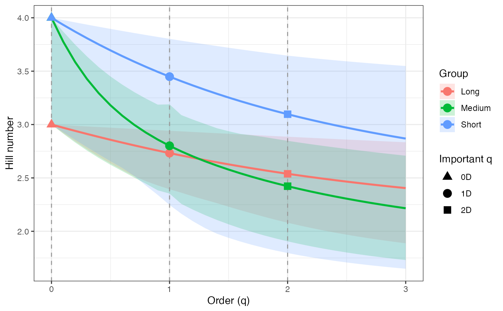
ggplot(hill_profile1_df, aes(x = q, y = observed)) +
geom_ribbon(aes(ymin = lower, ymax = upper), fill = "grey80") +
geom_line(color = "black", linewidth = 1) +
facet_wrap(~ group, scales = "free_y") +
labs(x = "Order (q)", y = "Hill number") +
theme_bw()
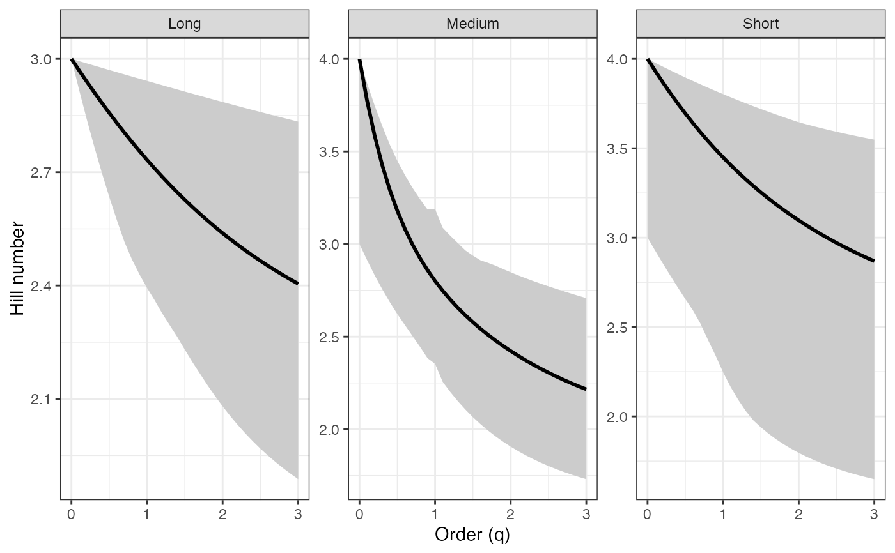
# Rényi profile - Percentile CIs ----
renyi_profile1 <-
diversity.profile(pdata$CUAL, group = pdata$LNGS,
parameter = "renyi", ci.type = "perc",
R = 100)
renyi_profile1
#> $Long
#> q observed mean lower upper ci.type
#> 1 0.0 1.0986123 1.0986123 1.0986123 1.098612 perc
#> 2 0.1 1.0885756 1.0870352 1.0713405 1.096651 perc
#> 3 0.2 1.0786646 1.0756751 1.0445900 1.094688 perc
#> 4 0.3 1.0688928 1.0645524 1.0185534 1.092725 perc
#> 5 0.4 1.0592726 1.0536840 0.9932854 1.090762 perc
#> 6 0.5 1.0498155 1.0430838 0.9688562 1.088800 perc
#> 7 0.6 1.0405315 1.0327627 0.9453233 1.086839 perc
#> 8 0.7 1.0314297 1.0227288 0.9227308 1.084880 perc
#> 9 0.8 1.0225177 1.0129878 0.9039650 1.082923 perc
#> 10 0.9 1.0138021 1.0035431 0.8876954 1.080970 perc
#> 11 1.0 1.0052882 0.9943962 0.8728393 1.079020 perc
#> 12 1.1 0.9969801 0.9855467 0.8592705 1.077075 perc
#> 13 1.2 0.9888807 0.9769926 0.8444168 1.075134 perc
#> 14 1.3 0.9809920 0.9687308 0.8308097 1.073199 perc
#> 15 1.4 0.9733151 0.9607569 0.8171116 1.071270 perc
#> 16 1.5 0.9658499 0.9530654 0.8020777 1.069347 perc
#> 17 1.6 0.9585956 0.9456502 0.7872769 1.067432 perc
#> 18 1.7 0.9515507 0.9385045 0.7731827 1.065525 perc
#> 19 1.8 0.9447130 0.9316209 0.7589977 1.063625 perc
#> 20 1.9 0.9380796 0.9249916 0.7453687 1.061735 perc
#> 21 2.0 0.9316472 0.9186086 0.7324130 1.059854 perc
#> 22 2.1 0.9254122 0.9124637 0.7201144 1.057982 perc
#> 23 2.2 0.9193702 0.9065485 0.7084532 1.056121 perc
#> 24 2.3 0.9135169 0.9008547 0.6974074 1.054271 perc
#> 25 2.4 0.9078477 0.8953740 0.6869526 1.052432 perc
#> 26 2.5 0.9023576 0.8900981 0.6770634 1.050605 perc
#> 27 2.6 0.8970416 0.8850190 0.6677135 1.048790 perc
#> 28 2.7 0.8918947 0.8801286 0.6588763 1.046988 perc
#> 29 2.8 0.8869118 0.8754193 0.6505251 1.045199 perc
#> 30 2.9 0.8820876 0.8708834 0.6426336 1.043423 perc
#> 31 3.0 0.8774170 0.8665138 0.6351764 1.041662 perc
#>
#> $Medium
#> q observed mean lower upper ci.type
#> 1 0.0 1.3862944 1.2539606 1.0986123 1.3862944 perc
#> 2 0.1 1.3284446 1.2196338 1.0695199 1.3531850 perc
#> 3 0.2 1.2771555 1.1879051 1.0410417 1.3214922 perc
#> 4 0.3 1.2319160 1.1586511 1.0140956 1.2916590 perc
#> 5 0.4 1.1920742 1.1316895 0.9884536 1.2635166 perc
#> 6 0.5 1.1569284 1.1068094 0.9641420 1.2384492 perc
#> 7 0.6 1.1257925 1.0837948 0.9412842 1.2159523 perc
#> 8 0.7 1.0980367 1.0624396 0.9179494 1.1953579 perc
#> 9 0.8 1.0731077 1.0425563 0.8943079 1.1764658 perc
#> 10 0.9 1.0505342 1.0239795 0.8686818 1.1589550 perc
#> 11 1.0 1.0299241 1.0440692 0.8553457 1.1596702 perc
#> 12 1.1 1.0109570 0.9901955 0.8137426 1.1276507 perc
#> 13 1.2 0.9933740 0.9747635 0.7891224 1.1136260 perc
#> 14 1.3 0.9769680 0.9601836 0.7662219 1.1005218 perc
#> 15 1.4 0.9615743 0.9463820 0.7449180 1.0871727 perc
#> 16 1.5 0.9470625 0.9332962 0.7250965 1.0775935 perc
#> 17 1.6 0.9333293 0.9208723 0.7066515 1.0689660 perc
#> 18 1.7 0.9202928 0.9090639 0.6894846 1.0642578 perc
#> 19 1.8 0.9078876 0.8978302 0.6735042 1.0589221 perc
#> 20 1.9 0.8960613 0.8871351 0.6586249 1.0525525 perc
#> 21 2.0 0.8847711 0.8769463 0.6447671 1.0464808 perc
#> 22 2.1 0.8739819 0.8672344 0.6318562 1.0406695 perc
#> 23 2.2 0.8636641 0.8579729 0.6198228 1.0350879 perc
#> 24 2.3 0.8537922 0.8491371 0.6086022 1.0297111 perc
#> 25 2.4 0.8443440 0.8407042 0.5981339 1.0245184 perc
#> 26 2.5 0.8352998 0.8326530 0.5883618 1.0194929 perc
#> 27 2.6 0.8266413 0.8249635 0.5792337 1.0146207 perc
#> 28 2.7 0.8183519 0.8176171 0.5707014 1.0098866 perc
#> 29 2.8 0.8104158 0.8105961 0.5627199 1.0052210 perc
#> 30 2.9 0.8028180 0.8038840 0.5552479 1.0006819 perc
#> 31 3.0 0.7955444 0.7974649 0.5482469 0.9962622 perc
#>
#> $Short
#> q observed mean lower upper ci.type
#> 1 0.0 1.386294 1.3431421 1.0986123 1.386294 perc
#> 2 0.1 1.369609 1.3190363 1.0743761 1.380870 perc
#> 3 0.2 1.353305 1.2956683 1.0499905 1.375524 perc
#> 4 0.3 1.337402 1.2731155 1.0255639 1.370259 perc
#> 5 0.4 1.321914 1.2514372 1.0012082 1.365077 perc
#> 6 0.5 1.306851 1.2306731 0.9770358 1.359978 perc
#> 7 0.6 1.292219 1.2108452 0.9531570 1.354963 perc
#> 8 0.7 1.278021 1.1919591 0.9239536 1.350033 perc
#> 9 0.8 1.264256 1.1740066 0.8868933 1.345188 perc
#> 10 0.9 1.250923 1.1569682 0.8500964 1.340427 perc
#> 11 1.0 1.238017 1.1408164 0.8089771 1.335752 perc
#> 12 1.1 1.225530 1.1255173 0.7716779 1.331160 perc
#> 13 1.2 1.213454 1.1110333 0.7379438 1.326652 perc
#> 14 1.3 1.201780 1.0973247 0.7074902 1.322228 perc
#> 15 1.4 1.190496 1.0843509 0.6814069 1.317886 perc
#> 16 1.5 1.179593 1.0720714 0.6616248 1.313625 perc
#> 17 1.6 1.169058 1.0604463 0.6435955 1.309446 perc
#> 18 1.7 1.158879 1.0494374 0.6271330 1.305345 perc
#> 19 1.8 1.149044 1.0390077 0.6120705 1.301324 perc
#> 20 1.9 1.139542 1.0291220 0.5982590 1.297380 perc
#> 21 2.0 1.130361 1.0197471 0.5855667 1.293513 perc
#> 22 2.1 1.121489 1.0108515 0.5738773 1.290362 perc
#> 23 2.2 1.112914 1.0024057 0.5630882 1.287322 perc
#> 24 2.3 1.104627 0.9943817 0.5531090 1.284387 perc
#> 25 2.4 1.096616 0.9867537 0.5438602 1.281554 perc
#> 26 2.5 1.088871 0.9794972 0.5352717 1.278818 perc
#> 27 2.6 1.081382 0.9725895 0.5272815 1.276176 perc
#> 28 2.7 1.074140 0.9660093 0.5198349 1.273622 perc
#> 29 2.8 1.067136 0.9597367 0.5128832 1.271154 perc
#> 30 2.9 1.060361 0.9537532 0.5063832 1.268767 perc
#> 31 3.0 1.053806 0.9480415 0.5002964 1.266458 perc
#>
#> attr(,"R")
#> [1] 100
#> attr(,"conf")
#> [1] 0.95
#> attr(,"parameter")
#> [1] "renyi"
#> attr(,"ci.type")
#> [1] "perc"
renyi_profile1_df <- dplyr::bind_rows(renyi_profile1, .id = "group")
renyi_points1_df <- renyi_profile1_df %>%
filter(q %in% important_q) %>%
mutate(order_label = factor(q, levels = important_q,
labels = important_labels))
ggplot(renyi_profile1_df, aes(x = q, y = observed,
color = group, fill = group)) +
geom_ribbon(aes(ymin = lower, ymax = upper), alpha = 0.2, color = NA) +
geom_line(linewidth = 1) +
geom_vline(xintercept = c(0, 1, 2), linetype = "dashed",
color = "grey60") +
geom_point(data = renyi_points1_df, aes(shape = order_label),
size = 3, stroke = 1, inherit.aes = TRUE) +
scale_shape_manual(values = c(17, 19, 15), name = "Important q") +
labs(x = "Order (q)", y = "Hill number",
color = "Group", fill = "Group") +
theme_bw()
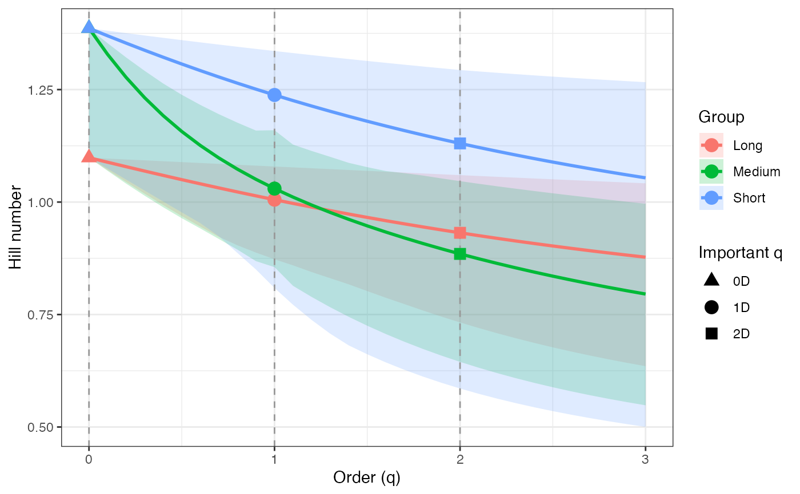
ggplot(renyi_profile1_df, aes(x = q, y = observed)) +
geom_ribbon(aes(ymin = lower, ymax = upper), fill = "grey80") +
geom_line(color = "black", linewidth = 1) +
facet_wrap(~ group, scales = "free_y") +
labs(x = "Order (q)", y = "Hill number") +
theme_bw()
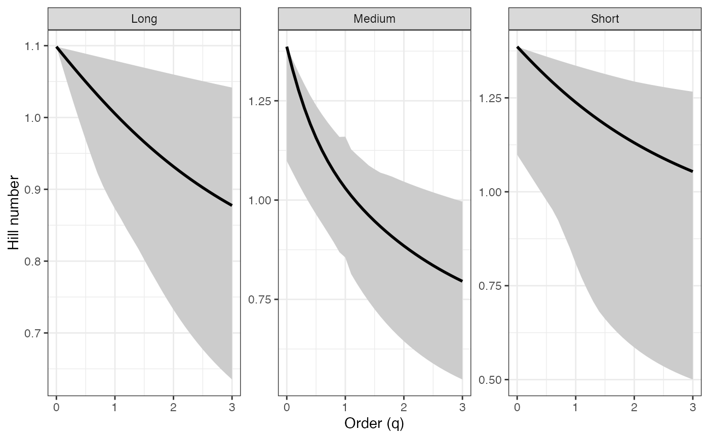
# Tsallis profile - Percentile CIs ----
tsallis_profile1 <-
diversity.profile(pdata$CUAL, group = pdata$LNGS,
parameter = "tsallis", ci.type = "perc",
R = 100)
tsallis_profile1
#> $Long
#> q observed mean lower upper ci.type
#> 1 0.0 2.0000000 2.0000000 2.0000000 2.0000000 perc
#> 2 0.1 1.8485612 1.8445078 1.8030064 1.8701492 perc
#> 3 0.2 1.7126236 1.7056892 1.6329542 1.7508452 perc
#> 4 0.3 1.5903508 1.5814316 1.4858245 1.6411364 perc
#> 5 0.4 1.4801432 1.4699205 1.3579911 1.5401630 perc
#> 6 0.5 1.3806058 1.3695933 1.2465007 1.4471473 perc
#> 7 0.6 1.2905205 1.2791022 1.1488930 1.3613862 perc
#> 8 0.7 1.2088223 1.1972819 1.0631117 1.2822429 perc
#> 9 0.8 1.1345790 1.1231228 0.9908472 1.2091410 perc
#> 10 0.9 1.0669734 1.0557484 0.9282917 1.1415579 perc
#> 11 1.0 1.0052882 0.9943962 0.8728393 1.0790200 perc
#> 12 1.1 0.9488928 0.9384013 0.8233871 1.0210976 perc
#> 13 1.2 0.8972324 0.8871830 0.7769629 0.9674007 perc
#> 14 1.3 0.8498176 0.8402328 0.7353630 0.9175750 perc
#> 15 1.4 0.8062167 0.7971048 0.6970026 0.8712985 perc
#> 16 1.5 0.7660477 0.7574069 0.6607378 0.8282785 perc
#> 17 1.6 0.7289728 0.7207937 0.6274374 0.7882486 perc
#> 18 1.7 0.6946920 0.6869605 0.5970673 0.7509663 perc
#> 19 1.8 0.6629392 0.6556377 0.5688731 0.7162107 perc
#> 20 1.9 0.6334774 0.6265866 0.5429826 0.6837803 perc
#> 21 2.0 0.6060957 0.5995949 0.5192130 0.6534915 perc
#> 22 2.1 0.5806057 0.5744741 0.4973384 0.6251766 perc
#> 23 2.2 0.5568392 0.5510560 0.4771604 0.5986823 perc
#> 24 2.3 0.5346455 0.5291904 0.4585041 0.5738689 perc
#> 25 2.4 0.5138895 0.5087429 0.4412154 0.5506082 perc
#> 26 2.5 0.4944499 0.4895931 0.4251580 0.5287832 perc
#> 27 2.6 0.4762176 0.4716328 0.4102118 0.5082866 perc
#> 28 2.7 0.4590941 0.4547646 0.3962702 0.4890202 perc
#> 29 2.8 0.4429909 0.4389010 0.3832386 0.4708937 perc
#> 30 2.9 0.4278278 0.4239626 0.3710331 0.4538246 perc
#> 31 3.0 0.4135320 0.4098779 0.3595792 0.4377369 perc
#>
#> $Medium
#> q observed mean lower upper ci.type
#> 1 0.0 3.0000000 2.5400000 2.0000000 3.0000000 perc
#> 2 0.1 2.5617123 2.2401074 1.7982365 2.6444109 perc
#> 3 0.2 2.2224763 1.9956664 1.6247863 2.3478584 perc
#> 4 0.3 1.9552854 1.7936491 1.4767470 2.0998091 perc
#> 5 0.4 1.7411443 1.6245227 1.3492331 1.8904114 perc
#> 6 0.5 1.5665950 1.4812411 1.2388496 1.7149840 perc
#> 7 0.6 1.4220235 1.3585393 1.1429892 1.5660527 perc
#> 8 0.7 1.3004971 1.2524382 1.0567918 1.4377834 perc
#> 9 0.8 1.1969637 1.1598946 0.9792760 1.3263983 perc
#> 10 0.9 1.1076994 1.0785527 0.9075292 1.2287853 perc
#> 11 1.0 1.0299241 1.0440692 0.8553457 1.1596702 perc
#> 12 1.1 0.9615347 0.9424719 0.7815072 1.0663936 perc
#> 13 1.2 0.9009177 0.8850940 0.7299819 0.9983216 perc
#> 14 1.3 0.8468176 0.8334796 0.6844978 0.9372857 perc
#> 15 1.4 0.7982434 0.7868465 0.6441307 0.8816156 perc
#> 16 1.5 0.7544018 0.7445472 0.6081262 0.8330990 perc
#> 17 1.6 0.7146493 0.7060404 0.5758629 0.7890550 perc
#> 18 1.7 0.6784574 0.6708698 0.5468256 0.7503583 perc
#> 19 1.8 0.6453869 0.6386478 0.5205838 0.7141905 perc
#> 20 1.9 0.6150691 0.6090432 0.4967760 0.6802287 perc
#> 21 2.0 0.5871914 0.5817708 0.4750965 0.6488233 perc
#> 22 2.1 0.5614865 0.5565842 0.4552853 0.6197165 perc
#> 23 2.2 0.5377246 0.5332688 0.4371208 0.5926846 perc
#> 24 2.3 0.5157061 0.5116373 0.4204126 0.5675323 perc
#> 25 2.4 0.4952573 0.4915256 0.4049970 0.5440878 perc
#> 26 2.5 0.4762260 0.4727891 0.3907324 0.5221994 perc
#> 27 2.6 0.4584783 0.4553000 0.3774958 0.5017322 perc
#> 28 2.7 0.4418959 0.4389452 0.3651804 0.4825654 perc
#> 29 2.8 0.4263738 0.4236242 0.3536926 0.4645817 perc
#> 30 2.9 0.4118190 0.4092474 0.3429508 0.4476971 perc
#> 31 3.0 0.3981481 0.3957347 0.3328830 0.4318241 perc
#>
#> $Short
#> q observed mean lower upper ci.type
#> 1 0.0 3.0000000 2.8500000 2.0000000 3.0000000 perc
#> 2 0.1 2.7003331 2.5444732 1.8109797 2.7391597 perc
#> 3 0.2 2.4405950 2.2846169 1.6454402 2.5067852 perc
#> 4 0.3 2.2146076 2.0623057 1.5001663 2.2993757 perc
#> 5 0.4 2.0172417 1.8710245 1.3724067 2.1138972 perc
#> 6 0.5 1.8442276 1.7055264 1.2598040 1.9477170 perc
#> 7 0.6 1.6920012 1.5615656 1.1603366 1.7985467 perc
#> 8 0.7 1.5575795 1.4356907 1.0647063 1.6643943 perc
#> 9 0.8 1.4384586 1.3250825 0.9704435 1.5435233 perc
#> 10 0.9 1.3325309 1.2274271 0.8873121 1.4344177 perc
#> 11 1.0 1.2380168 1.1408164 0.8089771 1.3357515 perc
#> 12 1.1 1.1534096 1.0636692 0.7426119 1.2463640 perc
#> 13 1.2 1.0774297 0.9946691 0.6859806 1.1652368 perc
#> 14 1.3 1.0089869 0.9327148 0.6373107 1.0914755 perc
#> 15 1.4 0.9471496 0.8768810 0.5962613 1.0242931 perc
#> 16 1.5 0.8911198 0.8263864 0.5631613 0.9629964 perc
#> 17 1.6 0.8402110 0.7805684 0.5337549 0.9069736 perc
#> 18 1.7 0.7938317 0.7388628 0.5074738 0.8556840 perc
#> 19 1.8 0.7514702 0.7007869 0.4838543 0.8086491 perc
#> 20 1.9 0.7126828 0.6659263 0.4625154 0.7654448 perc
#> 21 2.0 0.6770833 0.6339236 0.4431424 0.7256944 perc
#> 22 2.1 0.6443352 0.6044694 0.4254739 0.6892186 perc
#> 23 2.2 0.6141439 0.5772951 0.4092914 0.6555354 perc
#> 24 2.3 0.5862509 0.5521663 0.3944114 0.6243824 perc
#> 25 2.4 0.5604291 0.5288780 0.3806785 0.5955254 perc
#> 26 2.5 0.5364780 0.5072503 0.3679609 0.5687553 perc
#> 27 2.6 0.5142206 0.4871248 0.3561459 0.5438848 perc
#> 28 2.7 0.4934997 0.4683615 0.3451367 0.5207459 perc
#> 29 2.8 0.4741760 0.4508366 0.3348497 0.4991881 perc
#> 30 2.9 0.4561251 0.4344399 0.3252125 0.4790756 perc
#> 31 3.0 0.4392361 0.4190734 0.3161621 0.4602865 perc
#>
#> attr(,"R")
#> [1] 100
#> attr(,"conf")
#> [1] 0.95
#> attr(,"parameter")
#> [1] "tsallis"
#> attr(,"ci.type")
#> [1] "perc"
tsallis_profile1_df <- dplyr::bind_rows(tsallis_profile1, .id = "group")
tsallis_points1_df <- tsallis_profile1_df %>%
filter(q %in% important_q) %>%
mutate(order_label = factor(q, levels = important_q,
labels = important_labels))
ggplot(tsallis_profile1_df, aes(x = q, y = observed,
color = group, fill = group)) +
geom_ribbon(aes(ymin = lower, ymax = upper), alpha = 0.2, color = NA) +
geom_line(linewidth = 1) +
geom_vline(xintercept = c(0, 1, 2), linetype = "dashed",
color = "grey60") +
geom_point(data = tsallis_points1_df, aes(shape = order_label),
size = 3, stroke = 1, inherit.aes = TRUE) +
scale_shape_manual(values = c(17, 19, 15), name = "Important q") +
labs(x = "Order (q)", y = "Hill number",
color = "Group", fill = "Group") +
theme_bw()
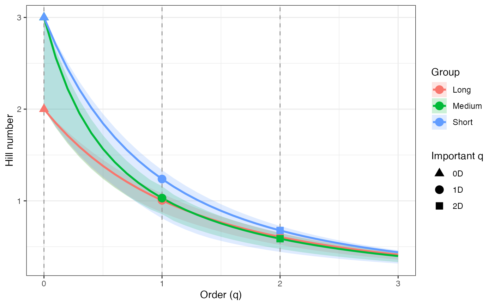
ggplot(tsallis_profile1_df, aes(x = q, y = observed)) +
geom_ribbon(aes(ymin = lower, ymax = upper), fill = "grey80") +
geom_line(color = "black", linewidth = 1) +
facet_wrap(~ group, scales = "free_y") +
labs(x = "Order (q)", y = "Hill number") +
theme_bw()
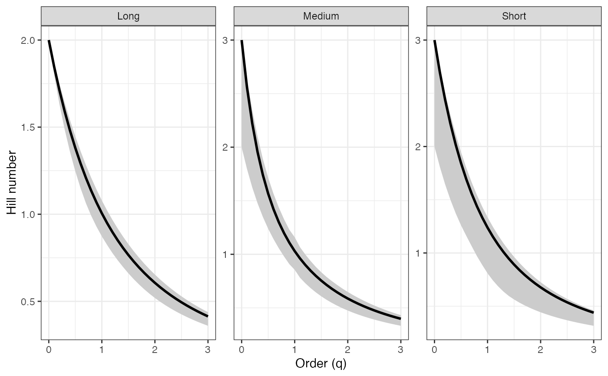
# Hill profile - BCa CIs ----
hill_profile2 <-
diversity.profile(pdata$CUAL, group = pdata$LNGS,
parameter = "hill", ci.type = "bca",
R = 100)
#> Warning: [Group: Long] No bootstrap variation; CI collapses to a point for component 1. Using percentile.
hill_profile2
#> $Long
#> q observed mean lower upper ci.type
#> 1 0.0 3.000000 3.000000 3.000000 3.000000 perc
#> 2 0.1 2.970041 2.965527 2.932545 2.995372 bca
#> 3 0.2 2.940750 2.932192 2.863502 2.990728 bca
#> 4 0.3 2.912153 2.900010 2.799673 2.986069 bca
#> 5 0.4 2.884272 2.868987 2.738976 2.981396 bca
#> 6 0.5 2.857124 2.839120 2.681496 2.976709 bca
#> 7 0.6 2.830721 2.810399 2.630102 2.972012 bca
#> 8 0.7 2.805073 2.782809 2.577771 2.967304 bca
#> 9 0.8 2.780186 2.756329 2.529918 2.962588 bca
#> 10 0.9 2.756060 2.730934 2.485132 2.957865 bca
#> 11 1.0 2.732695 2.706596 2.427051 2.950949 bca
#> 12 1.1 2.710085 2.683284 2.382272 2.945982 bca
#> 13 1.2 2.688224 2.660965 2.362100 2.943665 bca
#> 14 1.3 2.667101 2.639605 2.323292 2.938926 bca
#> 15 1.4 2.646704 2.619169 2.288397 2.934113 bca
#> 16 1.5 2.627019 2.599620 2.261746 2.929272 bca
#> 17 1.6 2.608031 2.580922 2.228176 2.922957 bca
#> 18 1.7 2.589722 2.563040 2.203406 2.918104 bca
#> 19 1.8 2.572075 2.545938 2.180581 2.913270 bca
#> 20 1.9 2.555070 2.529581 2.159130 2.908459 bca
#> 21 2.0 2.538688 2.513935 2.124021 2.901984 bca
#> 22 2.1 2.522908 2.498966 2.102563 2.897242 bca
#> 23 2.2 2.507711 2.484642 2.082248 2.892541 bca
#> 24 2.3 2.493075 2.470933 2.063014 2.887882 bca
#> 25 2.4 2.478981 2.457808 2.044801 2.883267 bca
#> 26 2.5 2.465409 2.445239 2.012201 2.877011 bca
#> 27 2.6 2.452337 2.433199 1.995137 2.872558 bca
#> 28 2.7 2.439748 2.421660 1.979036 2.868162 bca
#> 29 2.8 2.427621 2.410598 1.963842 2.863823 bca
#> 30 2.9 2.415938 2.399990 1.966468 2.860889 bca
#> 31 3.0 2.404680 2.389812 1.935965 2.855318 bca
#>
#> $Medium
#> q observed mean lower upper ci.type
#> 1 0.0 4.000000 3.540000 3.000000 4.000000 bca
#> 2 0.1 3.775167 3.412327 2.952163 3.905080 bca
#> 3 0.2 3.586424 3.299979 2.904874 3.813829 bca
#> 4 0.3 3.427791 3.200860 2.857909 3.726278 bca
#> 5 0.4 3.293906 3.113045 2.819627 3.642435 bca
#> 6 0.5 3.180150 3.034831 2.772660 3.562280 bca
#> 7 0.6 3.082659 2.964754 2.722793 3.485770 bca
#> 8 0.7 2.998274 2.901581 2.666897 3.412843 bca
#> 9 0.8 2.924454 2.844287 2.596739 3.343420 bca
#> 10 0.9 2.859178 2.792026 2.523580 3.277409 bca
#> 11 1.0 2.800853 2.847501 2.298108 3.036745 bca
#> 12 1.1 2.748230 2.699954 2.321664 3.149462 bca
#> 13 1.2 2.700330 2.659105 2.254534 3.085279 bca
#> 14 1.3 2.656390 2.621170 2.198320 3.038350 bca
#> 15 1.4 2.615811 2.585830 2.112456 2.970052 bca
#> 16 1.5 2.578125 2.552814 2.090746 2.942559 bca
#> 17 1.6 2.542961 2.521895 2.000212 2.903576 bca
#> 18 1.7 2.510025 2.492881 1.963177 2.882086 bca
#> 19 1.8 2.479080 2.465605 1.930196 2.864650 bca
#> 20 1.9 2.449934 2.439921 1.886424 2.839210 bca
#> 21 2.0 2.422430 2.415705 1.860490 2.822951 bca
#> 22 2.1 2.396434 2.392844 1.830849 2.795464 bca
#> 23 2.2 2.371835 2.371239 1.809002 2.780066 bca
#> 24 2.3 2.348536 2.350800 1.788981 2.765619 bca
#> 25 2.4 2.326451 2.331447 1.770596 2.752028 bca
#> 26 2.5 2.305505 2.313107 1.747312 2.725366 bca
#> 27 2.6 2.285629 2.295713 1.731531 2.713495 bca
#> 28 2.7 2.266761 2.279205 1.716966 2.702208 bca
#> 29 2.8 2.248843 2.263526 1.697313 2.680014 bca
#> 30 2.9 2.231821 2.248624 1.691038 2.681181 bca
#> 31 3.0 2.215647 2.234452 1.679480 2.671357 bca
#>
#> $Short
#> q observed mean lower upper ci.type
#> 1 0.0 4.000000 3.850000 3.000000 4.000000 bca
#> 2 0.1 3.933810 3.757118 3.877980 3.988280 bca
#> 3 0.2 3.870196 3.669992 3.767522 3.976678 bca
#> 4 0.3 3.809136 3.588497 3.667194 3.965197 bca
#> 5 0.4 3.750595 3.512442 3.568716 3.953837 bca
#> 6 0.5 3.694521 3.441585 3.468633 3.942602 bca
#> 7 0.6 3.640856 3.375645 3.372719 3.931491 bca
#> 8 0.7 3.589527 3.314320 3.261430 3.920507 bca
#> 9 0.8 3.540459 3.257302 3.252818 3.909650 bca
#> 10 0.9 3.493567 3.204280 3.182505 3.898922 bca
#> 11 1.0 3.448767 3.154954 3.112232 3.888323 bca
#> 12 1.1 3.405970 3.109039 3.042049 3.877853 bca
#> 13 1.2 3.365087 3.066263 2.964983 3.867513 bca
#> 14 1.3 3.326031 3.026377 2.865854 3.857304 bca
#> 15 1.4 3.288713 2.989147 2.826590 3.847225 bca
#> 16 1.5 3.253050 2.954359 2.750550 3.837276 bca
#> 17 1.6 3.218958 2.921817 2.729023 3.827457 bca
#> 18 1.7 3.186359 2.891341 2.699936 3.817768 bca
#> 19 1.8 3.155176 2.862767 2.686806 3.808208 bca
#> 20 1.9 3.125338 2.835945 2.665494 3.798777 bca
#> 21 2.0 3.096774 2.810738 2.642202 3.789474 bca
#> 22 2.1 3.069420 2.787022 2.493607 3.780298 bca
#> 23 2.2 3.043214 2.764682 2.458828 3.771249 bca
#> 24 2.3 3.018098 2.743615 2.356433 3.762325 bca
#> 25 2.4 2.994016 2.723726 2.330302 3.753525 bca
#> 26 2.5 2.970917 2.704928 2.304934 3.744850 bca
#> 27 2.6 2.948751 2.687142 2.277157 3.736296 bca
#> 28 2.7 2.927474 2.670296 2.208431 3.727864 bca
#> 29 2.8 2.907041 2.654323 2.191599 3.719551 bca
#> 30 2.9 2.887412 2.639162 2.181589 3.711357 bca
#> 31 3.0 2.868549 2.624758 2.170635 3.703280 bca
#>
#> attr(,"R")
#> [1] 100
#> attr(,"conf")
#> [1] 0.95
#> attr(,"parameter")
#> [1] "hill"
#> attr(,"ci.type")
#> [1] "bca"
hill_profile2_df <- dplyr::bind_rows(hill_profile2, .id = "group")
hill_points2_df <- hill_profile2_df %>%
filter(q %in% important_q) %>%
mutate(order_label = factor(q, levels = important_q,
labels = important_labels))
ggplot(hill_profile2_df, aes(x = q, y = observed,
color = group, fill = group)) +
geom_ribbon(aes(ymin = lower, ymax = upper), alpha = 0.2, color = NA) +
geom_line(linewidth = 1) +
geom_vline(xintercept = c(0, 1, 2), linetype = "dashed",
color = "grey60") +
geom_point(data = hill_points2_df, aes(shape = order_label),
size = 3, stroke = 1, inherit.aes = TRUE) +
scale_shape_manual(values = c(17, 19, 15), name = "Important q") +
labs(x = "Order (q)", y = "Hill number",
color = "Group", fill = "Group") +
theme_bw()
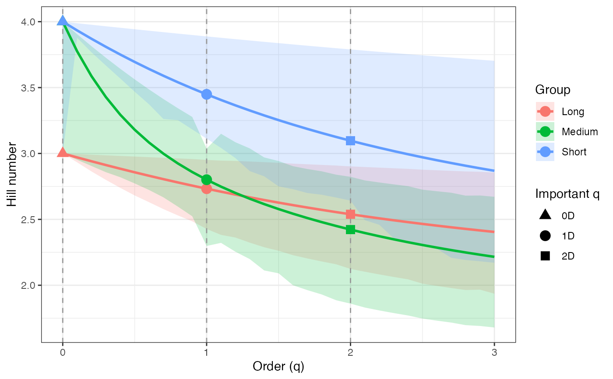
ggplot(hill_profile2_df, aes(x = q, y = observed)) +
geom_ribbon(aes(ymin = lower, ymax = upper), fill = "grey80") +
geom_line(color = "black", linewidth = 1) +
facet_wrap(~ group, scales = "free_y") +
labs(x = "Order (q)", y = "Hill number") +
theme_bw()
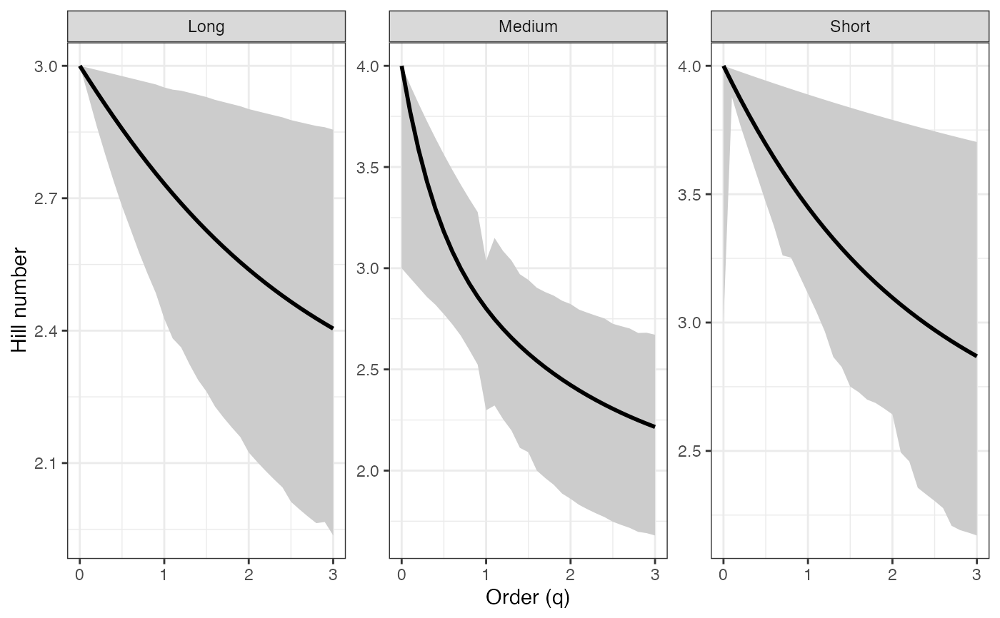
# Rényi profile - BCa CIs ----
renyi_profile2 <-
diversity.profile(pdata$CUAL, group = pdata$LNGS,
parameter = "renyi", ci.type = "bca",
R = 100)
#> Warning: [Group: Long] No bootstrap variation; CI collapses to a point for component 1. Using percentile.
renyi_profile2
#> $Long
#> q observed mean lower upper ci.type
#> 1 0.0 1.0986123 1.0986123 1.0986123 1.098612 perc
#> 2 0.1 1.0885756 1.0870352 1.0758710 1.097069 bca
#> 3 0.2 1.0786646 1.0756751 1.0520463 1.095517 bca
#> 4 0.3 1.0688928 1.0645524 1.0295041 1.093958 bca
#> 5 0.4 1.0592726 1.0536840 1.0075857 1.092391 bca
#> 6 0.5 1.0498155 1.0430838 0.9863755 1.090818 bca
#> 7 0.6 1.0405315 1.0327627 0.9670251 1.089239 bca
#> 8 0.7 1.0314297 1.0227288 0.9469301 1.087654 bca
#> 9 0.8 1.0225177 1.0129878 0.9281978 1.086063 bca
#> 10 0.9 1.0138021 1.0035431 0.9103428 1.084468 bca
#> 11 1.0 1.0052882 0.9943962 0.8866940 1.082131 bca
#> 12 1.1 0.9969801 0.9855467 0.8680785 1.080447 bca
#> 13 1.2 0.9888807 0.9769926 0.8595818 1.079655 bca
#> 14 1.3 0.9809920 0.9687308 0.8430132 1.078044 bca
#> 15 1.4 0.9733151 0.9607569 0.8278706 1.076411 bca
#> 16 1.5 0.9658499 0.9530654 0.8161574 1.074760 bca
#> 17 1.6 0.9585956 0.9456502 0.8011945 1.072602 bca
#> 18 1.7 0.9515507 0.9385045 0.7900334 1.070941 bca
#> 19 1.8 0.9447130 0.9316209 0.7796298 1.069283 bca
#> 20 1.9 0.9380796 0.9249916 0.7697495 1.067630 bca
#> 21 2.0 0.9316472 0.9186086 0.7533549 1.065401 bca
#> 22 2.1 0.9254122 0.9124637 0.7432035 1.063765 bca
#> 23 2.2 0.9193702 0.9065485 0.7334959 1.062141 bca
#> 24 2.3 0.9135169 0.9008547 0.7242157 1.060529 bca
#> 25 2.4 0.9078477 0.8953740 0.7153471 1.058929 bca
#> 26 2.5 0.9023576 0.8900981 0.6992565 1.056757 bca
#> 27 2.6 0.8970416 0.8850190 0.6907379 1.055208 bca
#> 28 2.7 0.8918947 0.8801286 0.6826322 1.053676 bca
#> 29 2.8 0.8869118 0.8754193 0.6749217 1.052161 bca
#> 30 2.9 0.8820876 0.8708834 0.6762762 1.051135 bca
#> 31 3.0 0.8774170 0.8665138 0.6606161 1.049186 bca
#>
#> $Medium
#> q observed mean lower upper ci.type
#> 1 0.0 1.3862944 1.2539606 1.0986123 1.3862944 bca
#> 2 0.1 1.3284446 1.2196338 1.0825391 1.3622783 bca
#> 3 0.2 1.2771555 1.1879051 1.0664017 1.3386336 bca
#> 4 0.3 1.2319160 1.1586511 1.0501308 1.3154100 bca
#> 5 0.4 1.1920742 1.1316895 1.0367309 1.2926525 bca
#> 6 0.5 1.1569284 1.1068094 1.0200689 1.2704008 bca
#> 7 0.6 1.1257925 1.0837948 1.0022530 1.2486889 bca
#> 8 0.7 1.0980367 1.0624396 0.9817532 1.2275456 bca
#> 9 0.8 1.0731077 1.0425563 0.9543792 1.2069943 bca
#> 10 0.9 1.0505342 1.0239795 0.9261618 1.1870531 bca
#> 11 1.0 1.0299241 1.0440692 0.8320861 1.1107907 bca
#> 12 1.1 1.0109570 0.9901955 0.8430059 1.1475966 bca
#> 13 1.2 0.9933740 0.9747635 0.8132593 1.1268140 bca
#> 14 1.3 0.9769680 0.9601836 0.7879301 1.1113549 bca
#> 15 1.4 0.9615743 0.9463820 0.7481097 1.0887515 bca
#> 16 1.5 0.9470625 0.9332962 0.7377280 1.0793188 bca
#> 17 1.6 0.9333293 0.9208723 0.6933023 1.0659862 bca
#> 18 1.7 0.9202928 0.9090639 0.6745658 1.0585639 bca
#> 19 1.8 0.9078876 0.8978302 0.6575951 1.0524838 bca
#> 20 1.9 0.8960613 0.8871351 0.6346948 1.0435363 bca
#> 21 2.0 0.8847711 0.8769463 0.6208455 1.0377878 bca
#> 22 2.1 0.8739819 0.8672344 0.6047659 1.0280017 bca
#> 23 2.2 0.8636641 0.8579729 0.5927557 1.0224745 bca
#> 24 2.3 0.8537922 0.8491371 0.5816214 1.0172613 bca
#> 25 2.4 0.8443440 0.8407042 0.5712871 1.0123325 bca
#> 26 2.5 0.8352998 0.8326530 0.5580405 1.0025998 bca
#> 27 2.6 0.8266413 0.8249635 0.5489636 0.9982342 bca
#> 28 2.7 0.8183519 0.8176171 0.5405125 0.9940656 bca
#> 29 2.8 0.8104158 0.8105961 0.5290057 0.9858173 bca
#> 30 2.9 0.8028180 0.8038840 0.5252892 0.9862527 bca
#> 31 3.0 0.7955444 0.7974649 0.5184279 0.9825813 bca
#>
#> $Short
#> q observed mean lower upper ci.type
#> 1 0.0 1.386294 1.3431421 1.0986123 1.386294 bca
#> 2 0.1 1.369609 1.3190363 1.3553145 1.383360 bca
#> 3 0.2 1.353305 1.2956683 1.3264266 1.380447 bca
#> 4 0.3 1.337402 1.2731155 1.2994596 1.377555 bca
#> 5 0.4 1.321914 1.2514372 1.2722060 1.374687 bca
#> 6 0.5 1.306851 1.2306731 1.2437605 1.371841 bca
#> 7 0.6 1.292219 1.2108452 1.2158124 1.369019 bca
#> 8 0.7 1.278021 1.1919591 1.1830825 1.366221 bca
#> 9 0.8 1.264256 1.1740066 1.1799299 1.363448 bca
#> 10 0.9 1.250923 1.1569682 1.1579722 1.360700 bca
#> 11 1.0 1.238017 1.1408164 1.1357278 1.357978 bca
#> 12 1.1 1.225530 1.1255173 1.1136837 1.355282 bca
#> 13 1.2 1.213454 1.1110333 1.0887980 1.352612 bca
#> 14 1.3 1.201780 1.0973247 1.0529275 1.349968 bca
#> 15 1.4 1.190496 1.0843509 1.0392726 1.347352 bca
#> 16 1.5 1.179593 1.0720714 1.0122510 1.344763 bca
#> 17 1.6 1.169058 1.0604463 1.0039435 1.342201 bca
#> 18 1.7 1.158879 1.0494374 0.9935947 1.339666 bca
#> 19 1.8 1.149044 1.0390077 0.9886909 1.337159 bca
#> 20 1.9 1.139542 1.0291220 0.9805934 1.334679 bca
#> 21 2.0 1.130361 1.0197471 0.9716126 1.332227 bca
#> 22 2.1 1.121489 1.0108515 0.9148452 1.329803 bca
#> 23 2.2 1.112914 1.0024057 0.9009437 1.327406 bca
#> 24 2.3 1.104627 0.9943817 0.8571701 1.325037 bca
#> 25 2.4 1.096616 0.9867537 0.8461694 1.322696 bca
#> 26 2.5 1.088871 0.9794972 0.8353206 1.320381 bca
#> 27 2.6 1.081382 0.9725895 0.8231472 1.318095 bca
#> 28 2.7 1.074140 0.9660093 0.7924803 1.315835 bca
#> 29 2.8 1.067136 0.9597367 0.7847679 1.313603 bca
#> 30 2.9 1.060361 0.9537532 0.7801050 1.311398 bca
#> 31 3.0 1.053806 0.9480415 0.7750198 1.309219 bca
#>
#> attr(,"R")
#> [1] 100
#> attr(,"conf")
#> [1] 0.95
#> attr(,"parameter")
#> [1] "renyi"
#> attr(,"ci.type")
#> [1] "bca"
renyi_profile2_df <- dplyr::bind_rows(renyi_profile2, .id = "group")
renyi_points2_df <- renyi_profile2_df %>%
filter(q %in% important_q) %>%
mutate(order_label = factor(q, levels = important_q,
labels = important_labels))
ggplot(renyi_profile2_df, aes(x = q, y = observed,
color = group, fill = group)) +
geom_ribbon(aes(ymin = lower, ymax = upper), alpha = 0.2, color = NA) +
geom_line(linewidth = 1) +
geom_vline(xintercept = c(0, 1, 2), linetype = "dashed",
color = "grey60") +
geom_point(data = renyi_points2_df, aes(shape = order_label),
size = 3, stroke = 1, inherit.aes = TRUE) +
scale_shape_manual(values = c(17, 19, 15), name = "Important q") +
labs(x = "Order (q)", y = "Hill number",
color = "Group", fill = "Group") +
theme_bw()
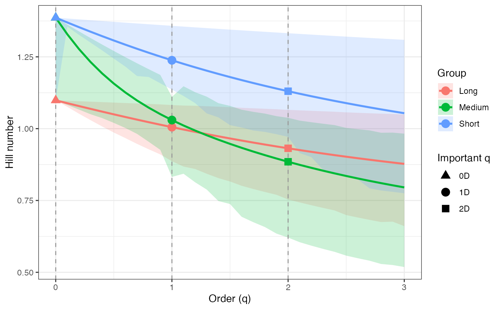
ggplot(renyi_profile2_df, aes(x = q, y = observed)) +
geom_ribbon(aes(ymin = lower, ymax = upper), fill = "grey80") +
geom_line(color = "black", linewidth = 1) +
facet_wrap(~ group, scales = "free_y") +
labs(x = "Order (q)", y = "Hill number") +
theme_bw()
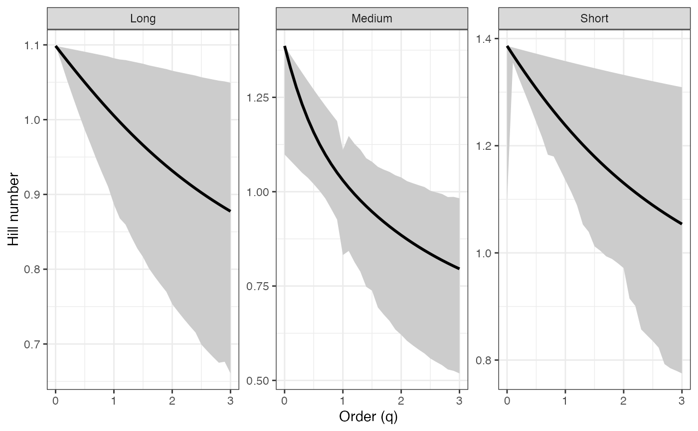
# Tsallis profile - BCa CIs ----
tsallis_profile2 <-
diversity.profile(pdata$CUAL, group = pdata$LNGS,
parameter = "tsallis", ci.type = "bca",
R = 100)
#> Warning: [Group: Long] No bootstrap variation; CI collapses to a point for component 1. Using percentile.
tsallis_profile2
#> $Long
#> q observed mean lower upper ci.type
#> 1 0.0 2.0000000 2.0000000 2.0000000 2.0000000 perc
#> 2 0.1 1.8485612 1.8445078 1.8149117 1.8712706 bca
#> 3 0.2 1.7126236 1.7056892 1.6502007 1.7528358 bca
#> 4 0.3 1.5903508 1.5814316 1.5082476 1.6437867 bca
#> 5 0.4 1.4801432 1.4699205 1.3840497 1.5432999 bca
#> 6 0.5 1.3806058 1.3695933 1.2750554 1.4506286 bca
#> 7 0.6 1.2905205 1.2791022 1.1806906 1.3650955 bca
#> 8 0.7 1.2088223 1.1972819 1.0951244 1.2860859 bca
#> 9 0.8 1.1345790 1.1231228 1.0199385 1.2130417 bca
#> 10 0.9 1.0669734 1.0557484 0.9530636 1.1454558 bca
#> 11 1.0 1.0052882 0.9943962 0.8866940 1.0821310 bca
#> 12 1.1 0.9488928 0.9384013 0.8314697 1.0241257 bca
#> 13 1.2 0.8972324 0.8871830 0.7897571 0.9710458 bca
#> 14 1.3 0.8498176 0.8402328 0.7448650 0.9210843 bca
#> 15 1.4 0.8062167 0.7971048 0.7047588 0.8746465 bca
#> 16 1.5 0.7660477 0.7574069 0.6701537 0.8314478 bca
#> 17 1.6 0.7289728 0.7207937 0.6361041 0.7909721 bca
#> 18 1.7 0.6946920 0.6869605 0.6068575 0.7535336 bca
#> 19 1.8 0.6629392 0.6556377 0.5800722 0.7186246 bca
#> 20 1.9 0.6334774 0.6265866 0.5553688 0.6860452 bca
#> 21 2.0 0.6060957 0.5995949 0.5292364 0.6554126 bca
#> 22 2.1 0.5806057 0.5744741 0.5077286 0.6269813 bca
#> 23 2.2 0.5568392 0.5510560 0.4877722 0.6003758 bca
#> 24 2.3 0.5346455 0.5291904 0.4692167 0.5754564 bca
#> 25 2.4 0.5138895 0.5087429 0.4519292 0.5520950 bca
#> 26 2.5 0.4944499 0.4895931 0.4331293 0.5300549 bca
#> 27 2.6 0.4762176 0.4716328 0.4180445 0.5094842 bca
#> 28 2.7 0.4590941 0.4547646 0.4039318 0.4901472 bca
#> 29 2.8 0.4429909 0.4389010 0.3907042 0.4719537 bca
#> 30 2.9 0.4278278 0.4239626 0.3807189 0.4548847 bca
#> 31 3.0 0.4135320 0.4098779 0.3666029 0.4386727 bca
#>
#> $Medium
#> q observed mean lower upper ci.type
#> 1 0.0 3.0000000 2.5400000 2.0000000 3.0000000 bca
#> 2 0.1 2.5617123 2.2401074 1.8325227 2.6752711 bca
#> 3 0.2 2.2224763 1.9956664 1.6836801 2.3975306 bca
#> 4 0.3 1.9552854 1.7936491 1.5508949 2.1589514 bca
#> 5 0.4 1.7411443 1.6245227 1.4377309 1.9531274 bca
#> 6 0.5 1.5665950 1.4812411 1.3304837 1.7748006 bca
#> 7 0.6 1.4220235 1.3585393 1.2325827 1.6196421 bca
#> 8 0.7 1.3004971 1.2524382 1.1412996 1.4840769 bca
#> 9 0.8 1.1969637 1.1598946 1.0515162 1.3651434 bca
#> 10 0.9 1.1076994 1.0785527 0.9703525 1.2603803 bca
#> 11 1.0 1.0299241 1.0440692 0.8320861 1.1107907 bca
#> 12 1.1 0.9615347 0.9424719 0.8085189 1.0842292 bca
#> 13 1.2 0.9009177 0.8850940 0.7506204 1.0088952 bca
#> 14 1.3 0.8468176 0.8334796 0.7017865 0.9450793 bca
#> 15 1.4 0.7982434 0.7868465 0.6466350 0.8826944 bca
#> 16 1.5 0.7544018 0.7445472 0.6170383 0.8341183 bca
#> 17 1.6 0.7146493 0.7060404 0.5672005 0.7875012 bca
#> 18 1.7 0.6784574 0.6708698 0.5376721 0.7476748 bca
#> 19 1.8 0.6453869 0.6386478 0.5113399 0.7114463 bca
#> 20 1.9 0.6150691 0.6090432 0.4835255 0.6767292 bca
#> 21 2.0 0.5871914 0.5817708 0.4625137 0.6457645 bca
#> 22 2.1 0.5614865 0.5565842 0.4416753 0.6156612 bca
#> 23 2.2 0.5377246 0.5332688 0.4241536 0.5890170 bca
#> 24 2.3 0.5157061 0.5116373 0.4080696 0.5642418 bca
#> 25 2.4 0.4952573 0.4915256 0.3932545 0.5411582 bca
#> 26 2.5 0.4762260 0.4727891 0.3779878 0.5184913 bca
#> 27 2.6 0.4584783 0.4553000 0.3653023 0.4984566 bca
#> 28 2.7 0.4418959 0.4389452 0.3535162 0.4796836 bca
#> 29 2.8 0.4263738 0.4236242 0.3411460 0.4613468 bca
#> 30 2.9 0.4118190 0.4092474 0.3322797 0.4455108 bca
#> 31 3.0 0.3981481 0.3957347 0.3226762 0.4299320 bca
#>
#> $Short
#> q observed mean lower upper ci.type
#> 1 0.0 3.0000000 2.8500000 2.0000000 3.0000000 bca
#> 2 0.1 2.7003331 2.5444732 2.6516143 2.7477982 bca
#> 3 0.2 2.4405950 2.2846169 2.3620629 2.5216066 bca
#> 4 0.3 2.2146076 2.0623057 2.1190616 2.3184596 bca
#> 5 0.4 2.0172417 1.8710245 1.9089914 2.1357529 bca
#> 6 0.5 1.8442276 1.7055264 1.7248532 1.9711971 bca
#> 7 0.6 1.6920012 1.5615656 1.5657607 1.8227779 bca
#> 8 0.7 1.5575795 1.4356907 1.4198528 1.6887211 bca
#> 9 0.8 1.4384586 1.3250825 1.3306795 1.5674622 bca
#> 10 0.9 1.3325309 1.2274271 1.2276475 1.4576210 bca
#> 11 1.0 1.2380168 1.1408164 1.1357278 1.3579779 bca
#> 12 1.1 1.1534096 1.0636692 1.0540127 1.2674543 bca
#> 13 1.2 1.0774297 0.9946691 0.9787190 1.1850958 bca
#> 14 1.3 1.0089869 0.9327148 0.9028529 1.1100563 bca
#> 15 1.4 0.9471496 0.8768810 0.8503742 1.0415855 bca
#> 16 1.5 0.8911198 0.8263864 0.7944871 0.9790171 bca
#> 17 1.6 0.8402110 0.7805684 0.7541423 0.9217588 bca
#> 18 1.7 0.7938317 0.7388628 0.7161100 0.8692837 bca
#> 19 1.8 0.7514702 0.7007869 0.6832921 0.8211223 bca
#> 20 1.9 0.7126828 0.6659263 0.6514888 0.7768560 bca
#> 21 2.0 0.6770833 0.6339236 0.6215278 0.7361111 bca
#> 22 2.1 0.6443352 0.6044694 0.5772518 0.6985538 bca
#> 23 2.2 0.6141439 0.5772951 0.5512157 0.6638853 bca
#> 24 2.3 0.5862509 0.5521663 0.5168267 0.6318381 bca
#> 25 2.4 0.5604291 0.5288780 0.4958971 0.6021725 bca
#> 26 2.5 0.5364780 0.5072503 0.4763591 0.5746732 bca
#> 27 2.6 0.5142206 0.4871248 0.4576493 0.5491468 bca
#> 28 2.7 0.4934997 0.4683615 0.4354133 0.5254195 bca
#> 29 2.8 0.4741760 0.4508366 0.4203371 0.5033346 bca
#> 30 2.9 0.4561251 0.4344399 0.4067948 0.4827511 bca
#> 31 3.0 0.4392361 0.4190734 0.3938802 0.4635417 bca
#>
#> attr(,"R")
#> [1] 100
#> attr(,"conf")
#> [1] 0.95
#> attr(,"parameter")
#> [1] "tsallis"
#> attr(,"ci.type")
#> [1] "bca"
tsallis_profile2_df <- dplyr::bind_rows(tsallis_profile2, .id = "group")
tsallis_points2_df <- tsallis_profile2_df %>%
filter(q %in% important_q) %>%
mutate(order_label = factor(q, levels = important_q,
labels = important_labels))
ggplot(tsallis_profile2_df, aes(x = q, y = observed,
color = group, fill = group)) +
geom_ribbon(aes(ymin = lower, ymax = upper), alpha = 0.2, color = NA) +
geom_line(linewidth = 1) +
geom_vline(xintercept = c(0, 1, 2), linetype = "dashed",
color = "grey60") +
geom_point(data = tsallis_points2_df, aes(shape = order_label),
size = 3, stroke = 1, inherit.aes = TRUE) +
scale_shape_manual(values = c(17, 19, 15), name = "Important q") +
labs(x = "Order (q)", y = "Hill number",
color = "Group", fill = "Group") +
theme_bw()
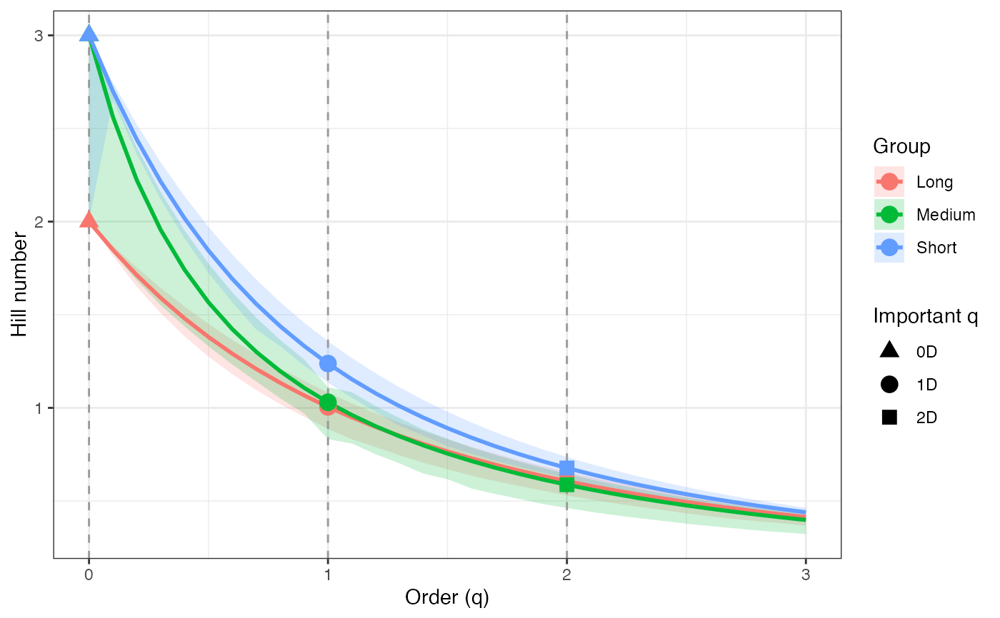
ggplot(tsallis_profile2_df, aes(x = q, y = observed)) +
geom_ribbon(aes(ymin = lower, ymax = upper), fill = "grey80") +
geom_line(color = "black", linewidth = 1) +
facet_wrap(~ group, scales = "free_y") +
labs(x = "Order (q)", y = "Hill number") +
theme_bw()
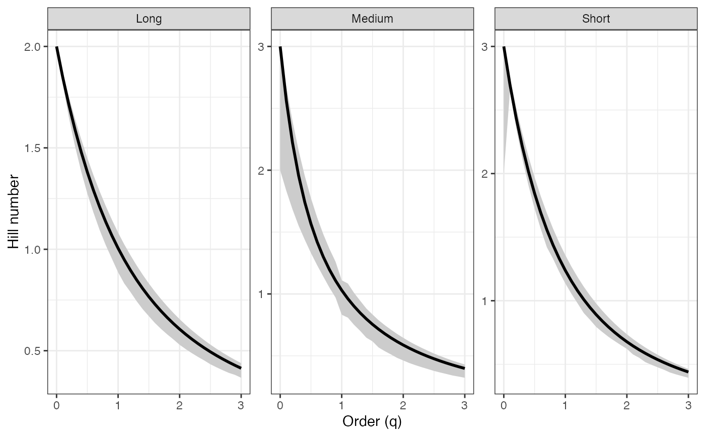